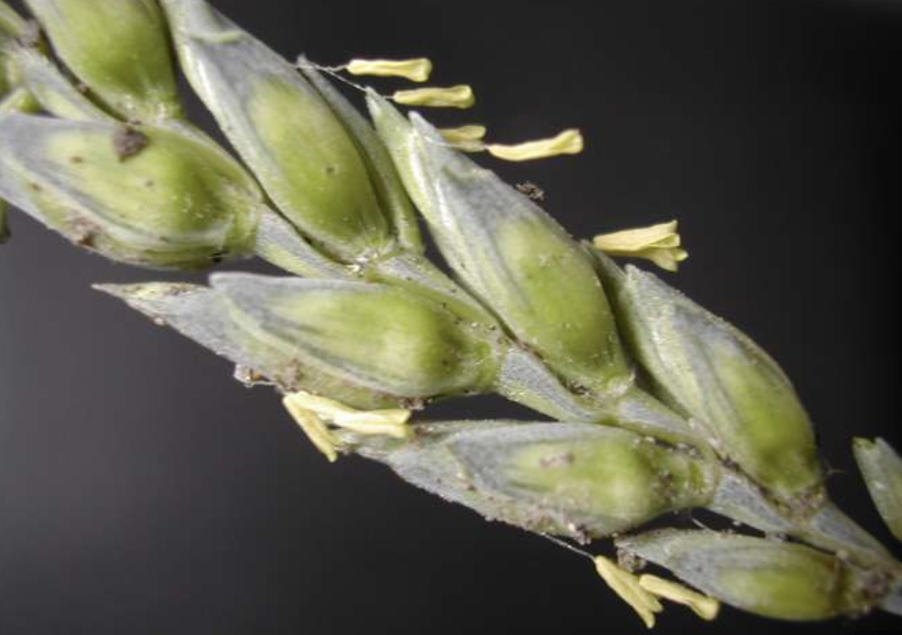
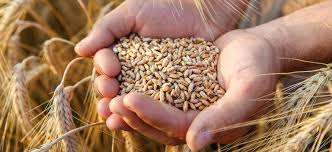
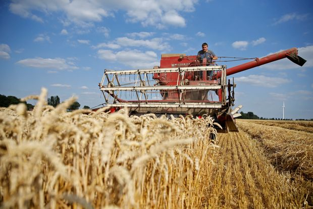

Filler
WHEAT
Wheat is typically milled into flour to be used for a variety of food. It’s a grain that comes from the wheat plant of the genus Triticum and has long slender leaves. The wheat stalks are cut down with machines or by hand. The stalks then undergo the process of threshing where the stalks are smacked to remove the wheat berries. After the wheat berries are collected, wind is blown on to remove any debris.




